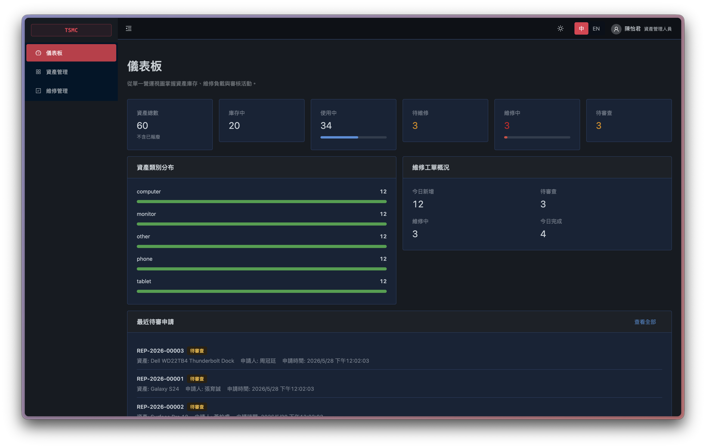
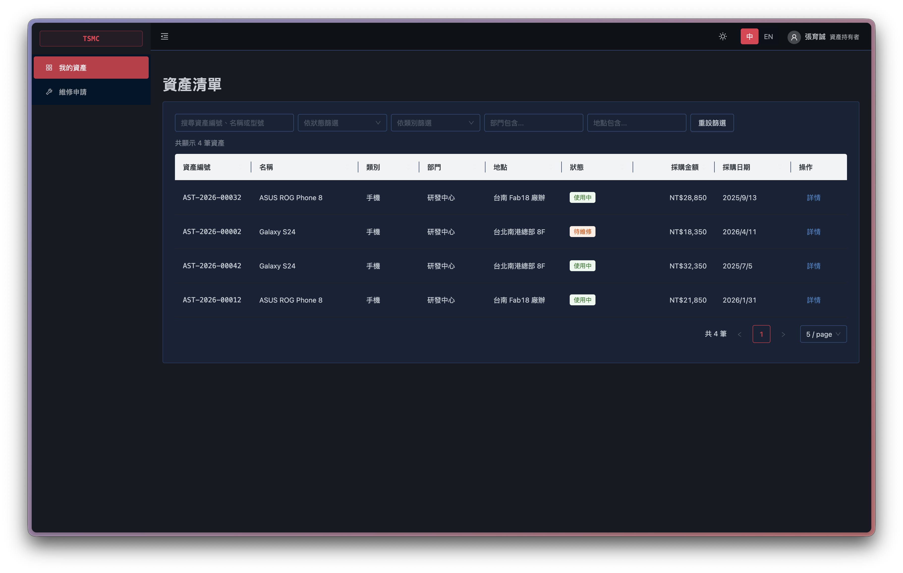
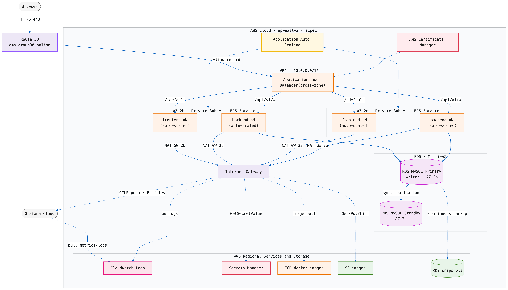
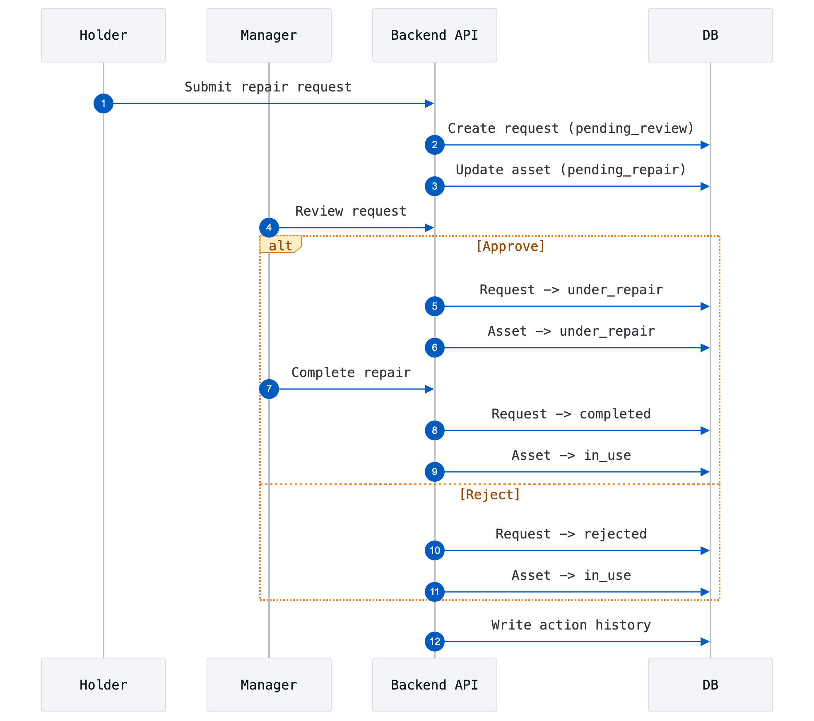
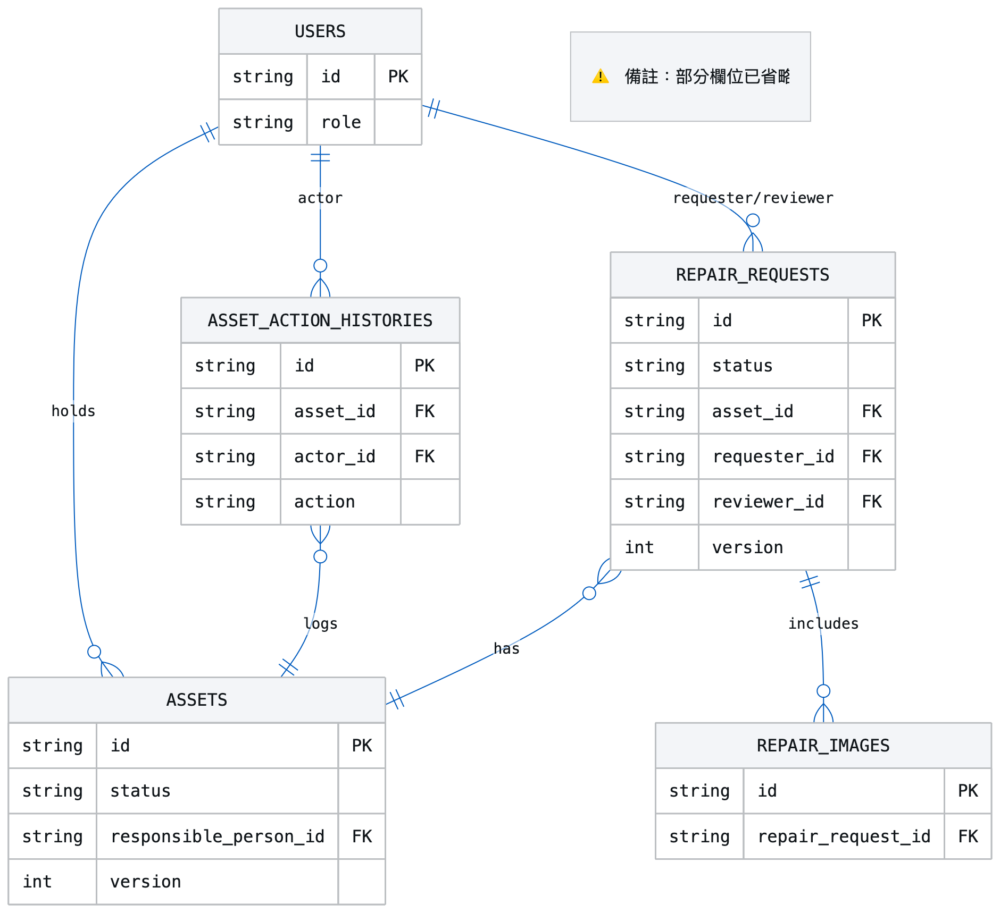
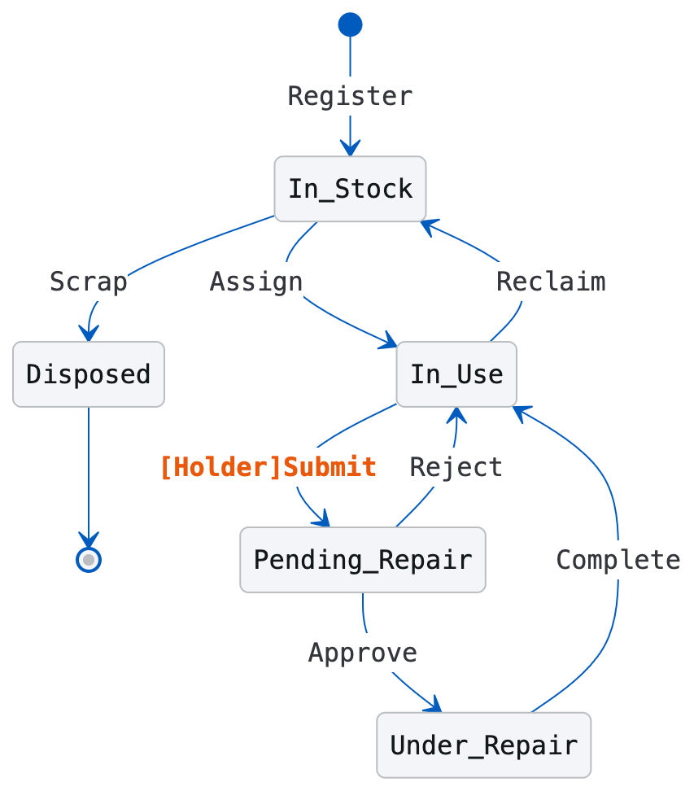
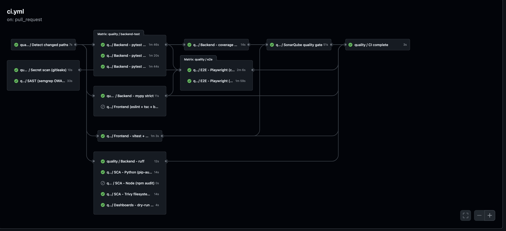
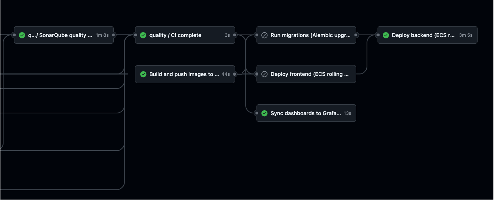
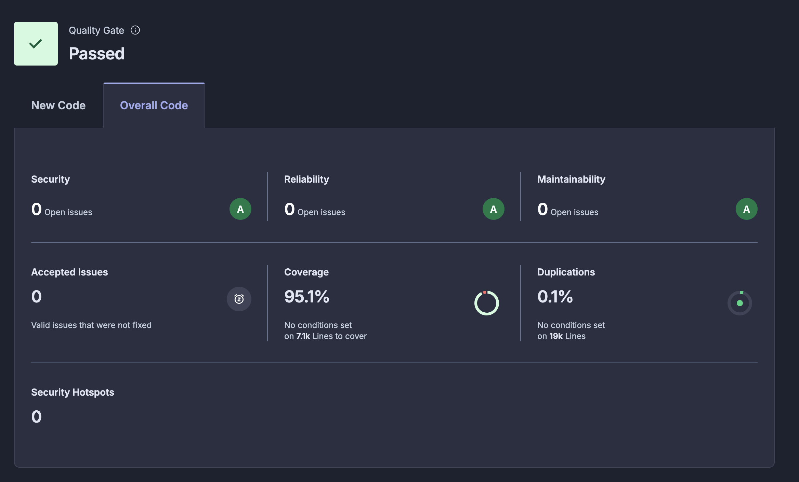
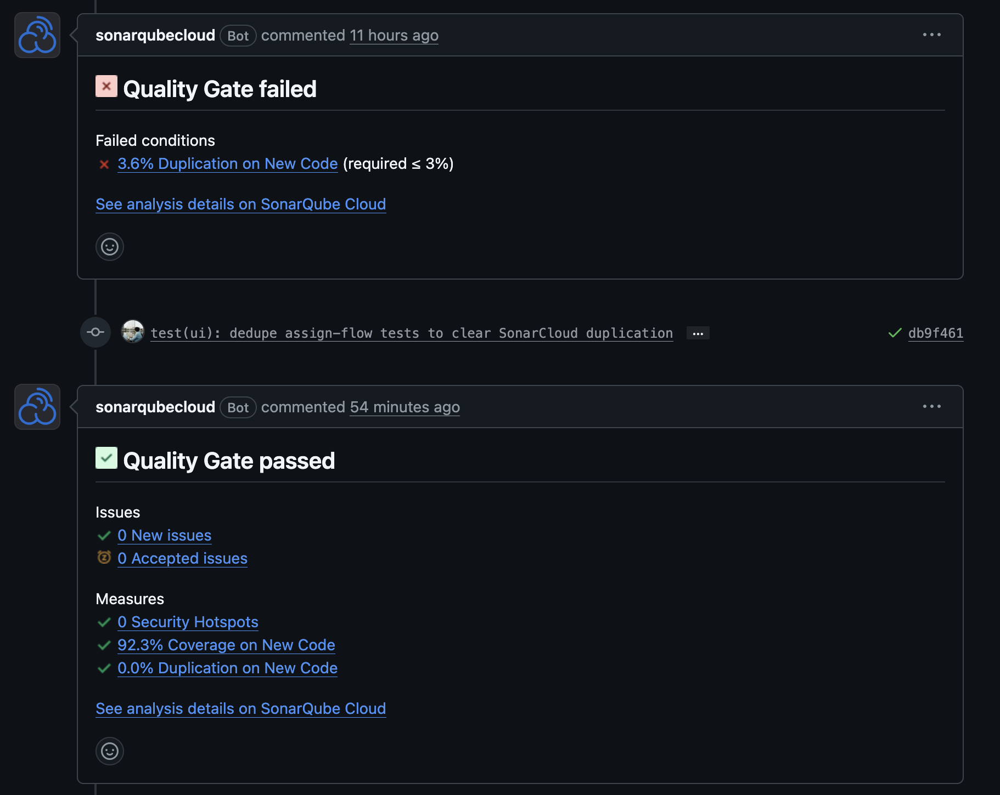

Asset Management System
Final Project
資產管理系統
Asset Management System
Group 30
劉仲楷 · 古庭榮 · 鄭怡文 · 陳亮諭 · 闕中豪
// production · Manager dashboard

2026 · 06 · 02
BE
FE
QA
Infra
Others
劉仲楷
古庭榮
鄭怡文
陳亮諭
闕中豪
Effort
Primary
劉仲楷Backend FSM · Audit log + CI/CD · Grafana Cloud + Roadmap
古庭榮Auth / Asset / Repair API + Manager Dashboard
鄭怡文i18n · Frontend refactor + Unit / Integration / E2E / Load Test
陳亮諭Asset list · Multi-dim filtering + Presentation
闕中豪Antd Layout · Theme switching + AWS infrastructure · ALB HTTPS
Agile Practices
User Stories
Personas · Empathy maps · Acceptance criteria
Weekly Sprints + Re-plan
Test-Driven Development
RED→GREEN
AI-Assisted Pairing
Human navigates · AI drives
Holder
Repair Requester
Say
「上次填的維修申請,現在到哪個階段了?有沒有辦法查?」
Do
送修兩三天沒消息就主動用通訊軟體追問。
Think
「設備送修期間我要怎麼工作?有沒有備用機可以借?」
Feel
無法追蹤進度而焦慮,不知設備何時回來。
Manager
Request Reviewer
Say
「這張單我剛要處理,才發現同事也在跑同一張。」
Do
靠口頭協調分工避免重工。
Think
「我更新了狀態,同事不一定看得到,兩人同時動同一張怎麼辦?」
Feel
用個人協調代替系統機制,做了卻沒解決的無力感。
US-01Holder
身為入職三個月、從未獨立處理設備故障的業務助理佳慧，我想要填寫故障描述、上傳故障照片並提交維修申請，這樣才能在設備出問題時立刻採取正確行動，不因文字難以描述問題而被退件或在主管面前留下不負責任的印象。
US-02
Holder
查詢維修申請進度
US-03
Holder
查看持有設備清單
US-04
Manager
審查並推進維修流程
US-05
Manager
查詢所有設備與保固
US-06
Manager
登記新採購設備入庫
US-01 Acceptance Criteria
持有者送出維修申請
填資產編號與故障描述後可提交,顯示成功並產生唯一申請單編號;申請單狀態為「待審查」。
- 可選擇上傳故障照片,成功後附於申請單。
- 申請提交後，申請單狀態顯示為「待審查」。
- 設備持有者可選擇上傳故障照片，照片上傳成功後附於申請單中供管理人員查看。
- Edge case 故障描述為空,不允許提交。
- Edge case 資產編號不存在,拒絕提交並提示無效。
- Edge case 設備已為「維修中」,禁止重複提交。
資產基礎資訊管理模組
✓資產登記與分類(唯一編號)
✓採購入庫:型號 / 供應商 / 金額
✓詳細屬性:地點 / 負責人 / 保固
✓資產狀態 FSM
申請單管理模組
✓申請 → 審查(同意 / 拒絕)
✓維修中:日期 / 內容 / 方案 / 費用
✓維修完成 → 流程結束
✓歷史維修 + 操作紀錄
✓Image upload
✓i18n (zh-TW + EN)
✓Concurrency control
✓Asset query / filter

D · Live Demo
Holder: log in & submit a repair request
06 · 24
D · Live Demo
Manager: review, approve & complete a repair
07 · 24
Frontend
React 18
Vite
TypeScript
Ant Design v6
Playwright
Vitest
Backend
FastAPI
SQLAlchemy
Alembic
MySQL 8
pytest
Infra
AWS ECS Fargate
ALB
RDS Multi-AZ
S3
Docker
Docker Compose
CI / CD
GitHub Actions
SonarCloud
gitleaks
Semgrep
Trivy
pip-audit
npm-audit
k6
Observability
Grafana Cloud
CloudWatch
OpenTelemetry
Loki
Tempo
Pyroscope
TrafficDAU → peak throughput
30,000
↓× 3 page views / user · day
90,000
↓÷ 86,400 seconds / day
≈ 1QPS
↓× 4 — peak factor · 80 / 20 rule
4.2QPS
- The design of redundancy targets availability not throughput.
Storage3-year data scale
200K
120K
~600 GB
- Two nodes behind a load balancer + RDS Multi-AZ removes the single point of failure.
- Composite indexes keep queries fast across 200,000 assets.




E2EPlaywright · 6 critical flows
Login · Submit repair · Review · Close · Register asset · Multi-dim search
IntegrationFastAPI TestClient · Real DB fixture
Covers every route · RBAC · Lifecycle integration
UnitBackend 400+ · Frontend 150+
Pure functions · Business logic · FSM rules · hooks + components
Backend Coverage
96.3%
pytest --cov
Frontend Coverage
94.7%
vitest
01
FSM Invariants
20 parameterized cases covering every legal / illegal state transition. Calls that violate the FSM are blocked at the API layer.

02
RBAC Matrix
Holder vs Manager × every endpoint x negative cases included.
HolderManager
View assetsownall
Register / edit / assign—✓
Submit repair request✓—
View requestsownall
Approve / reject / complete—✓
View request imagesownall
View manager dashboard—✓
03
Concurrent Review Race Condition
Two managers review the same request at once; the loser gets a 409 instead of a silent overwrite. v = row version (optimistic lock), bumped on every write.
Mgr A · v=3
Mgr B · v=3
↓ submits first
↓
✓ approved · v=4
409 Conflict
| Test profile | Duration | Peak VUs | Requests | Throughput | p95 latency | Errors | Verdict |
|---|---|---|---|---|---|---|---|
| Soak / Consistent8 user journeys, steady load · "does it hold over time?" | 30 min | 29 | 8,954 | 4.97 /s | 138 ms | 0.01% | PASS |
| Spike2 → 50 VUs in seconds · "survive a sudden surge?" | 100 s | 50 | 2,855 | 28.5 /s | 3,087 ms | 1.47% | RECOVERED |
| Stressramp until it breaks · "where is the ceiling?" | 120 s | 41 | 811 | 6.76 /s | 10,112 ms | 17.0% | SLO BREACH |
HTTP request duration — p95 & throughput left: ms · right: req/s · x: minutes
p95 latency
avg latency
throughput (req/s)
p95 latency138msmedian 23 ms · p99 384 ms · held flat 30 min
Error rate0.01%checks 100% · 1 failed request
Throughput4.97/s8,954 requests · 7,191 iterations
Latency vs. concurrency over the spike left: s · right: req/s · hover for per-window values
active VUs
throughput (req/s)
p95 latency
avg latency
Peak p95 latency12.4s@ 50 VUs · max 14.6 s
Recovery~40sp95 back under 1 s by t≈90 s
Error rate1.47%under 50% threshold · checks 99.9%
Response time vs. load as concurrency climbs left: s · right: req/s · dashed = SLO
active VUs
throughput (req/s)
p95 latency
avg latency
p95 SLO (10 s)
Breaking point~21VUsp95 crosses the 10 s SLO · t≈80 s
p95 at peak load12.7sat 41 VUs · final 10 s window
Error rate17.0%climbs to 27% at the top

Parallelization
pytest E2E sharding · Parallel task
Path-filtered
backend/** · frontend/** · CI/CD on demand


GatePR blocked by CI Quality Gate
SonarCloud quality gate fails (e.g. duplicated code over the limit) and the PR cannot merge.
BotAuto-assign Reviewer
A GitHub Action auto-assigns a reviewer when the PR opens, so every PR has a gatekeeper.

The Problem
Is the service healthy — and which endpoint is dragging it down?

The Problem
A metric is red — which endpoint, and is the container starved?

The Problem
Is the repair workflow itself healthy — FSM, conflicts, journey latency?

The Problem
A metric went red. Now why — which span or hotspot?

The Problem
Will the database choke before it takes the app down?

7 rules × 2 thresholds · as-code · Grafana provisioning
p95 latency
User-perceptible slowness
5xx rate
Correctness regression
DB connection pool
Capacity saturation
Disk / CPU
Infrastructure saturation
/health
Service down
Threshold crossed → email
Grafana emails the team the moment a rule fires
If X failsWhat happensMechanism
AZ failure
A single AZ goes down
ALB shifts to a healthy AZ · RDS Multi-AZ failover · ECS reschedules
DB transient outage
Shouldn't spew lots of 5xx
/ready returns 503 · ALB drains the target · no container kill
Manager race condition
Two review the same request
optimistic lock returns 409 · retry is safe
Bad Migration
DB schema broken
Alembic one-off before deploy · abort rollout on failure
Deploy regression
New version is up but broken
ECS Rolling · keep old until new is healthy
H · Closing
Q&A
Asset Management System
Live Demo + Repo
Live Demo + Repo
Demoams-group30.online
Repogithub.com/Joshua0209/Asset-Management-System
// Q&A coverage
劉仲楷CICD · Observability
古庭榮Backend API
鄭怡文Testing · i18n
陳亮諭Frontend pages
闕中豪AWS Infrastructure
28 · 28
Thank you · Group 30 · 2026-06-02